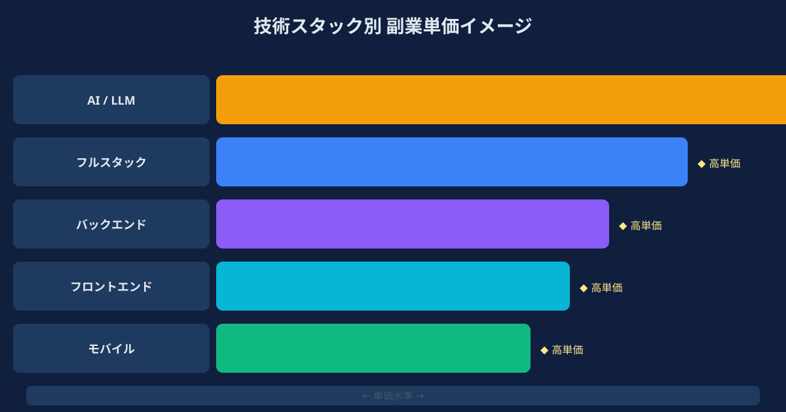
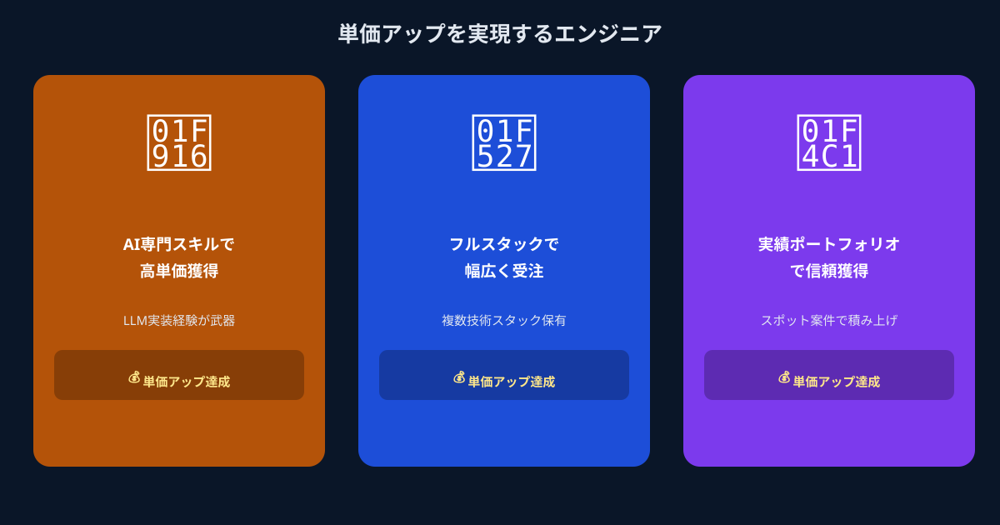

副業エンジニアの単価がわかりにくい、本当の理由
エンジニアの副業単価が把握しにくい最大の原因は、「市場が分散していること」にあります。クラウドソーシングサービスには数千円から数万円の案件が混在し、フリーランスエージェント経由の案件はフルタイム換算の月単価で表示される。土日だけ・週1タスクといったスポット発注の相場は、そのどちらにも当てはまりません。
加えて、副業案件の単価はスキルだけでなく「案件の性質」によっても大きく変わります。要件が固まっていないコンサルティング寄りの案件、明確な成果物があるタスク型の案件、週次で進捗を確認しながら進める伴走型の案件——それぞれ求められる関与の深さが異なり、適正単価も変わります。単純に「自分のスキルレベルを時給に換算する」だけでは、正しい相場感は掴めないのです。
また、副業を経験したエンジニアが単価情報をオープンに公開する文化がまだ日本では根付いていないことも、情報の非対称性を生んでいます。「自分が損をしているかもしれない」という不安を抱えたまま副業を続けているエンジニアは、実際のところ少なくありません。
2026年スポット副業の単価相場｜技術スタック別の実態

ANKENで扱うスポット・タスク型案件の実態をもとに、2026年現在の副業エンジニアの単価水準を技術スタック別に整理します。あくまで目安ですが、自分のポジションを把握するベースラインとして参考にしてください。
- フロントエンド（React・Vue・TypeScript）：時給4,000〜8,000円 / タスク単位3万〜10万円
- バックエンド（Python・Node・Go）：時給5,000〜10,000円 / タスク単位5万〜15万円
- フルスタック（上記両対応）：タスク単位8万〜20万円。スコープが広い分、単価の上振れが大きい
- 生成AI実装（LLM API・RAG・Agent）：タスク単位10万〜30万円。AIスキルのプレミアム上乗せが大きい
- インフラ・DevOps（AWS・GCP・Terraform）：タスク単位8万〜20万円。構成設計まで担える場合はさらに高単価
これらの数字を見てわかるように、単価の幅が大きいのは「タスクのスコープがどれだけ明確か」によって決まることが多いです。要件が曖昧な段階から関与する場合は単価が上がる一方で、リスクも高くなります。スポット案件として最も取り組みやすいのは、「この画面をReactで実装してほしい」「このAPIのレスポンスをLLMで加工するスクリプトを作ってほしい」というように、アウトプットが明確に定義されているタスクです。
また、注目すべきは生成AI関連スキルの単価プレミアムです。LLM API・RAG・Agentといったスタックに実務経験を持つエンジニアは、それ以外のスタックと比較して単価が1.5〜2倍程度高くなる傾向が、2026年の市場では明確に現れています。「AIは勉強中」という段階でも、スポット案件で実装経験を積むことで、このプレミアムを享受できる立場になれます。
スポット案件で単価を最大化する3つのポイント

単価は自分で設定するものです。「相場の中央値をもらえればいい」ではなく、自分の強みを正しく伝えることで、上限に近い単価を引き出せます。スポット副業において単価を最大化するための3つのポイントを紹介します。
ポイント① 「できること」ではなく「成果物」で提示する
「Pythonができます」「Reactの経験があります」という打ち出し方は、単価を下げる原因になります。発注者が価値を感じるのは「何を作れるか」ではなく「自分の課題を解決してもらえるか」です。
たとえば「社内ドキュメントをベクトル検索できるRAGシステムをPythonとLangChainで構築した経験があります」という打ち出し方に変えるだけで、発注者の頭の中に「この人に頼めば動くものができる」というイメージが生まれます。スポット案件の依頼者は要件が明確な場合が多いため、「成果物のイメージが伝わる自己紹介」を用意することが、単価交渉の出発点として最も効いてきます。
ポイント② AI・最新技術スタックを積極的に打ち出す
2026年現在、企業の開発ニーズのなかでも「生成AI活用」「LLM組み込み」「業務自動化」は特に需要が高く、対応できるエンジニアの数がまだ十分ではありません。たとえバックエンドやフロントエンドの専門家であっても、「生成AIとの連携部分も触ったことがある」という経験を持っていれば、それはプレミアムになります。
普段の本業や個人開発でChatGPT API・Claude API・LangChainに触れた経験があれば、スポット案件のプロフィールには必ず記載してください。「試したことがある」程度でも、何も書かないよりはるかに問い合わせが増えます。実案件の中でスキルを磨きながら、徐々に実績として積み上げていけばよいのです。
ポイント③ スポット実績を積み上げて次の単価交渉に活かす
副業の単価は、初回より2回目、2回目より3回目の方が上がりやすい構造になっています。「この人に頼むと動くものができる」という信頼が積み上がるにつれ、発注者は単価を上げてでも同じエンジニアに継続依頼したくなります。
スポット案件は1件ごとに完結しますが、「完成した実績」として次の案件への交渉材料になります。「前回のプロジェクトではこういう成果物を作りました」という具体的な話が、次の発注者に対して信頼の根拠として機能します。最初の単価は相場の中央値から始めても、実績を積み上げることで自然と上限に近づいていきます。ANKENのマイクロ・マッチング型の仕組みは、このサイクルを最も回しやすい設計になっています。
こんなエンジニアが単価アップに成功しています
スポット副業で単価を引き上げることに成功したエンジニアの具体的なケースを紹介します。
ReactとTypeScriptが専門で、最初のスポット案件は時給5,000円からスタート。ChatGPT APIを使ったフロント側の実装を1件こなしたことをきっかけに、「AI連携フロントエンド」として打ち出すようにプロフィールを変更。次の案件からは時給8,000〜9,000円で受注できるようになり、3ヶ月後には土日稼働のみで月収10万円を超えるようになった。
「長期コミットの副業は本業に支障が出そうで怖い」という理由で副業を避けていたが、タスク完結型のスポット案件なら1件ごとにスコープが明確で終わりが見えることを知り、ANKENで登録。最初の案件はAPI連携スクリプト1本で報酬5万円。成果物を丁寧に仕上げたことで同じ企業から追加案件を受け、タスク単位での信頼関係が積み上がった。現在は月1〜2件のペースで副業を継続中。
本業では生成AIを触る機会がなく「社内で遅れをとっている」という焦りを感じていた。週末に受けたRAG構築のスポット案件で、LangChain・Weaviateを使った実装を経験。副収入は1案件あたり15万円と想定以上だったが、それ以上に大きかったのは「本業で生成AI活用の提案ができるようになった」という副次効果。半年後に社内でAI活用プロジェクトのリード役を任されるようになり、本業評価にもプラスの影響が出た。
まとめ
副業エンジニアの単価は、スキルの高さだけでなく「どう見せるか」「どんな案件を選ぶか」「実績をどう積み上げるか」によっても大きく変わります。相場の下限に押し込まれることなく、自分のスキルに見合った単価を得るためには、まず市場の実態を正確に把握することが出発点です。
ANKENのマイクロ・マッチング型スポット案件は、タスクごとにスコープが明確で、週1日・土日だけでも参加できる設計になっています。「副業をいくらで始めればいいかわからない」という状態のエンジニアでも、プロフィールをもとにANKENが適正な案件をご提案しますので、まずは登録して実際の案件を見てみることをお勧めします。自分の市場価値は、動き始めてからこそ具体的に見えてきます。
週1・土日OK。タスク完結型の案件を、あなたのスキルに合わせてご提案します。登録無料・固定費ゼロ。
👉 無料でエンジニア登録して、案件を確認する登録費用・月額費用はかかりません。まず確認だけでもOKです。